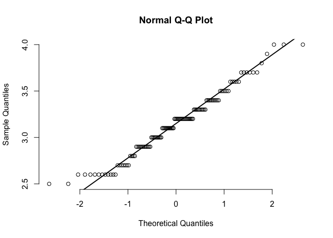

Cold Storage Milk Quality Maintainance Investigation.
Project purpose.
Cold Storage started its operations in Jan 2016. They are in the business of storing Pasteurized Fresh Whole or Skimmed Milk, Sweet Cream, Flavoured Milk Drinks. To ensure that there is no change of texture, body appearance, separation of fats the optimal temperature to be maintained is between 2—4°C.
In the first year of business, they outsourced the plant maintenance work to a professional company with stiff penalty clauses. It was agreed that if it was statistically proven that the probability of temperature going outside the 2—4°C during the one-year contract was above 2.5% and less than 5% then the penalty would be 10% of AMC (annual maintenance contract). In case it exceeded 5% then the penalty would be 25% of the AMC fee.
The objective is to find proportion of milk temperature that exceed below 2°C or above 4°C and determine the penalty Cold Storage should impose based on the contract should the company exceed the limits.
1 Explore and familiarise with the ‘Cold_Storage_Temp’ dataset.
library(pacman)
p_load(readr, dplyr, plyr, ggplot2, car, sjstats, multcomp, nortest, pwr, reshape2)CS.temp = read_csv("csv/Cold_Storage_Temp_Data.csv")## Parsed with column specification:
## cols(
## Season = col_character(),
## Month = col_character(),
## Date = col_double(),
## Temperature = col_double()
## )
CS.temp## # A tibble: 365 x 4
## Season Month Date Temperature
## <chr> <chr> <dbl> <dbl>
## 1 Winter Jan 1 2.3
## 2 Winter Jan 2 2.2
## 3 Winter Jan 3 2.4
## 4 Winter Jan 4 2.8
## 5 Winter Jan 5 2.5
## 6 Winter Jan 6 2.4
## 7 Winter Jan 7 2.8
## 8 Winter Jan 8 3
## 9 Winter Jan 9 2.4
## 10 Winter Jan 10 2.9
## # … with 355 more rows
1.1 Summarise of the dataset.
summary(CS.temp)## Season Month Date Temperature
## Length:365 Length:365 Min. : 1.00 Min. :1.700
## Class :character Class :character 1st Qu.: 8.00 1st Qu.:2.700
## Mode :character Mode :character Median :16.00 Median :3.000
## Mean :15.72 Mean :3.002
## 3rd Qu.:23.00 3rd Qu.:3.300
## Max. :31.00 Max. :4.500
1.2 Transform dtype.
CS.temp$Season = as.factor(CS.temp$Season)
CS.temp$Month = as.factor(CS.temp$Month)
# Summarise the dataset.
summary(CS.temp)## Season Month Date Temperature
## Rainy :122 Aug : 31 Min. : 1.00 Min. :1.700
## Summer:120 Dec : 31 1st Qu.: 8.00 1st Qu.:2.700
## Winter:123 Jan : 31 Median :16.00 Median :3.000
## Jul : 31 Mean :15.72 Mean :3.002
## Mar : 31 3rd Qu.:23.00 3rd Qu.:3.300
## May : 31 Max. :31.00 Max. :4.500
## (Other):179
# Standard deviation.
sd(CS.temp$Temperature)## [1] 0.4658319
1.3 Summarise of the dataset by ‘Season’ variable.
CS.temp.summary.season = ddply(.data=CS.temp, .variable= ~ Season, .fun=function(data) summary(data$Temperature))
CS.temp.summary.season## Season Min. 1st Qu. Median Mean 3rd Qu. Max.
## 1 Rainy 1.7 2.70 3.05 3.087705 3.4 4.5
## 2 Summer 2.5 2.90 3.20 3.147500 3.4 4.0
## 3 Winter 1.8 2.45 2.80 2.776423 3.0 3.9
1.4 Check the detail of the dataset.
The overview includes the following:
- Check the proportion of nulls.
- Check if there’s any duplicated rows.
dataset_detail = function(df) {
na_count = colSums(is.na(df))
# Details.
nulls_proportion = na_count / nrow(df) * 100
duplicated_nrows = nrow(which(duplicated(df)))
details = list(nulls_proportion, duplicated_nrows)
names(details) = c("nulls_proportion", "duplicated_nrows")
return(details)
}
CS.temp.details = dataset_detail(CS.temp)
CS.temp.details## $nulls_proportion
## Season Month Date Temperature
## 0 0 0 0
##
## $duplicated_nrows
## NULL
1.5 Visualise the density distribution for ‘Temperature’ variable.
ggplot(data=CS.temp) +
aes(x=Temperature) +
geom_density(fill="grey")
1.6 Visualise the distribution for ‘Temperature’ variable by ‘Season’.
ggplot(data=CS.temp) +
aes(x=Season, y=Temperature) +
geom_boxplot() +
geom_hline(yintercept=4., color="red", alpha=.5) +
geom_hline(yintercept=2., color="red", alpha=.5)
1.7 Visualise the density distribution for ‘Temperature’ variable by ‘Season’.
ggplot(data=CS.temp) +
aes(x=Temperature, fill=Season) +
geom_density(alpha=.4)
1.8 Summary for section 1:
Data dictionary:
This dataset has 365 row. Each row refers to each date. The counts for
each unique value of the Season variable is about 120 rows, which is
quite balanced.
- Season: Rainy, Summer, Winter.
- Month: 1—12.
- Date: It refers to the day of the month.
- Temperature: Average milk temperature on that day.
Assumption on the dataset:
The milk temperature is calculated based on average. Meaning even if one of the milk product’s temperature exceeds 2°C or 4°C, it will not considered a violation to the contract as long as the average is within 2—4°C.
Findings from section 1.3:
- The dataset contains 3 independant variables and 1 dependent
variable which is
Temperature. Dateis nested withinMonthvariable, andMonthvariable is nested withinSeasonvariable.Datevariable is not a fixed effect. It is a random effect nested withinSeasonandMonthvariables.Seasonis a ‘between’ variable.Monthis a ‘within’ variable.
Findings from section 1.4:
- The dataset has no null row.
- The dataset has no duplicated row.
Findings from section 1.5, 1.6, and 1.7:
- The
Temperaturevariable seems to be normally distributed on overall. - The
TemperatureforWinterandRainyseason is slighly right skewed. - The
TemperatureforSummerseems to be normally distributed.
2 Find the proportion of temperature that exceed below 2°C and above 4°C.
# Proportion below 2°C.
temp.below.2 = sum(CS.temp$Temperature < 2.0) / nrow(CS.temp)
temp.below.2## [1] 0.008219178
# Proportion above 4°C.
temp.above.4 = sum(CS.temp$Temperature > 4.0) / nrow(CS.temp)
temp.above.4## [1] 0.01917808
# Total proportion that exceed the limits.
temp.below.2 + temp.above.4## [1] 0.02739726
3 Perform One-way ANOVA to see if there is significant difference in milk temperature between different seasons.
Null hypothesis: mu(Rainy) = mu(Summer) = mu(Winter)
Alternative hypothesis: At least 1 mean is different from the rest.
Conditions for One-way ANOVA:
- Variance must be equal >> Do a Levene and Brown Forsythe test.
- Data must normally distributed >> Do a Shapiro-Wilk and Anderson-Darling test + QQ plot.
- Data must be non-paired.
One-way ANOVA is robust to slight imbalance between the sample size of each season.
Alternative methods to One-way ANOVA:
- The limit of ANOVA robustness to heterogeneity is 1.5 ratio between largest and smallest variance. If the variance is above 1.5 ratio, consider using Kruskal Wallis test or Welch ANOVA. Unequal variance will decrease power and therefore increases type 1 error. Here’s a reference to the article Effect of variance ratio on ANOVA robustness: Might 1.5 be the limit?.
- If data is not normally distributed, consider using Box-Cox transformation. Otherwise, use Kruskal Wallis test.
3.1 Perform an assumption test.
3.1.1 Perform Levene and Brown Forsythe test for variance.
# Levene Test.
leveneTest(Temperature ~ Season, data=CS.temp, center=mean)## Levene's Test for Homogeneity of Variance (center = mean)
## Df F value Pr(>F)
## group 2 8.0498 0.0003798 ***
## 362
## ---
## Signif. codes: 0 '***' 0.001 '**' 0.01 '*' 0.05 '.' 0.1 ' ' 1
# Brown Forsythe Test.
leveneTest(Temperature ~ Season, data=CS.temp, center=median)## Levene's Test for Homogeneity of Variance (center = median)
## Df F value Pr(>F)
## group 2 8.0084 0.0003951 ***
## 362
## ---
## Signif. codes: 0 '***' 0.001 '**' 0.01 '*' 0.05 '.' 0.1 ' ' 1
3.1.1.1 Find the ratio between the largest and smallest variance.
# Calculate variance for each season.
var(CS.temp[CS.temp$Season == "Rainy",]$Temperature)## [1] 0.2779468
var(CS.temp[CS.temp$Season == "Summer",]$Temperature)## [1] 0.1236912
var(CS.temp[CS.temp$Season == "Winter",]$Temperature)## [1] 0.1716527
# Calculate the ratio between largest and smallest variance.
var(CS.temp[CS.temp$Season == "Rainy",]$Temperature) / var(CS.temp[CS.temp$Season == "Summer",]$Temperature)## [1] 2.247103
3.1.2 Perform Shapiro-Wilk and Anderson-Darling test.
# Perform normality test on temperature for 'Rainy' season.
shapiro.test(CS.temp[CS.temp$Season == "Rainy",]$Temperature)##
## Shapiro-Wilk normality test
##
## data: CS.temp[CS.temp$Season == "Rainy", ]$Temperature
## W = 0.98665, p-value = 0.2766
# Perform normality test on temperature for 'Summer' season.
shapiro.test(CS.temp[CS.temp$Season == "Summer",]$Temperature)##
## Shapiro-Wilk normality test
##
## data: CS.temp[CS.temp$Season == "Summer", ]$Temperature
## W = 0.97336, p-value = 0.01747
# Perform normality test on temperature for 'Winter' season.
shapiro.test(CS.temp[CS.temp$Season == "Winter",]$Temperature)##
## Shapiro-Wilk normality test
##
## data: CS.temp[CS.temp$Season == "Winter", ]$Temperature
## W = 0.98116, p-value = 0.08354
# Perform normality test on temperature for 'Rainy' season.
ad.test(CS.temp[CS.temp$Season == "Rainy",]$Temperature)##
## Anderson-Darling normality test
##
## data: CS.temp[CS.temp$Season == "Rainy", ]$Temperature
## A = 0.63343, p-value = 0.09654
# Perform normality test on temperature for 'Summer' season.
ad.test(CS.temp[CS.temp$Season == "Summer",]$Temperature)##
## Anderson-Darling normality test
##
## data: CS.temp[CS.temp$Season == "Summer", ]$Temperature
## A = 0.80328, p-value = 0.03654
# Perform normality test on temperature for 'Winter' season.
ad.test(CS.temp[CS.temp$Season == "Winter",]$Temperature)##
## Anderson-Darling normality test
##
## data: CS.temp[CS.temp$Season == "Winter", ]$Temperature
## A = 0.77636, p-value = 0.04264
3.1.3 Visualise the normality with QQ plots.
qqnorm(CS.temp[CS.temp$Season == "Rainy",]$Temperature, pch=1, frame=FALSE)
qqline(CS.temp[CS.temp$Season == "Rainy",]$Temperature, lwd=2)
qqnorm(CS.temp[CS.temp$Season == "Summer",]$Temperature, pch=1, frame=FALSE)
qqline(CS.temp[CS.temp$Season == "Summer",]$Temperature, lwd=2)
qqnorm(CS.temp[CS.temp$Season == "Winter",]$Temperature, pch=1, frame=FALSE)
qqline(CS.temp[CS.temp$Season == "Winter",]$Temperature, lwd=2)
3.2 Summary for section 3.1.
Findings from 3.1.1:
- The data does fails the homogeneity test.
- The variance ratio is larger than 1.5.
Findings from 3.1.2:
- The normality fails for temperature under
Summerseason. - The normality is near the borderline p-value for temperature under
Winterseason.
This might be due to large sample size, larger sample size has higher the chance of detecting smaller difference. Looking at the plot from section 1.7, the data under summer (highlited with green) looks somewhat symmetrical. The QQ plots also show that most of the data aren’t significantly diverted from the line. Hence, I will take it as near-normal.
Next steps:
I will do a Welch ANOVA test to address the unequal variance.
3.3 Perform ANOVA test.
3.3.1 Perform Welch ANOVA test.
Null hypothesis: mu(Rainy) = mu(Summer) = mu(Winter)
Alternative hypothesis: At least 1 mean is different from the rest.
aov.result = oneway.test(formula=Temperature ~ Season, data=CS.temp, var.equal=FALSE)
aov.result##
## One-way analysis of means (not assuming equal variances)
##
## data: Temperature and Season
## F = 29.959, num df = 2.00, denom df = 236.22, p-value = 2.537e-12
3.3.2 Perform post-hoc test with Holm Bonferonni correction.
# Perform pairwise comparison pos-hoc test.
ttest1 = t.test(CS.temp[CS.temp$Season == "Rainy",]$Temperature,
CS.temp[CS.temp$Season == "Summer",]$Temperature, paired=FALSE, exact=TRUE, var.equal=FALSE, alternative='two.sided')
ttest2 = t.test(CS.temp[CS.temp$Season == "Summer",]$Temperature,
CS.temp[CS.temp$Season == "Winter",]$Temperature, paired=FALSE, exact=TRUE, var.equal=FALSE, alternative='two.sided')
ttest3 = t.test(CS.temp[CS.temp$Season == "Winter",]$Temperature,
CS.temp[CS.temp$Season == "Rainy",]$Temperature, paired=FALSE, exact=TRUE, var.equal=FALSE, alternative='two.sided')
# Apply Holm Bonferonni correction for p-value.
p.adjust(c(ttest1$p.value, ttest2$p.value, ttest3$p.value), method="holm")## [1] 2.997695e-01 3.128108e-12 1.200527e-06
3.4 Summary for section 3.3.
Findings:
- The Welch ANOVA show a significant difference for temperature between either season with a p-value below 0.001.
- There is no significant difference for milk temperature between Rainy and Summer season. P-value = 0.299.
- There is significant difference for milk temperature between Summer and Winter season. P-value = below 0.001.
- There is significant difference for milk temperature between Rainy and Winter season. P-value = below 0.001.
4 Conclusion.
Since there is a significant difference for milk temperature between each season, this means that there is at least 1 mean that is significantly different from the rest. This also means different season has different effect on the milk temperature. The post-hoc result shows that the average milk temperature for rainy and summer season is significantly different from winter season.
ggplot(data=CS.temp) +
aes(x=Season, y=Temperature) +
geom_boxplot() +
geom_hline(yintercept=4., color="red", alpha=.5) +
geom_hline(yintercept=2., color="red", alpha=.5)
Identify the source of the problem:
Looking at the plot above, we can observe that rainy season has larger variation than summer and winter seasons and lowest control over the milk temperature. We can see that a small proportion of the temperature exceeds above 4°C and below 2°C. Additionally, there is also a small proportion of temperature that exceeds below 2°C during winter season, but the violation is mild compare to rainy season. Summer season has the highest control over milk temperature with fewer variation and no violation.
Hence, the company should find out the reason behind the cause, and be more cautious and prepared during winter and rainy season. Otherwise, Cold Storage can cease collaborating with the company and search for alternative company or solution.
5 Notes for future reference.
Latest update: 2020/01/31
List of things to take note:
- Currently none.